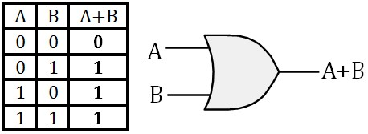

Representation des nombres
Systèmes pondérés
Intérêt du système binaire
Changement de base
Calcul dans le système binaire
La représentation des nombres négatifs
Autres Representations
Le code Gray
Algèbre de Boole
Introduction
Variables Booléenne
Fonctions Booléenne
Opérateurs logiques
Identités remarquables
Théorème de Morgan
Forme Canonique
NAND : Opérateur universel
Simplification des fonctions logiques
Introduction
Diagramme de Karnaugh
Remplissage de la table de Karnaugh
Regrouper les 1 en blocs
Lecture de la table de Karnaugh
Exemple 1: Binaire ⟶ Gray
Exemple 2: Etude d'un convoyeur
Le reste est en cours de redaction

Electronique Numérique
Representation des nombres
La représentation naturelle que nous utilisons pour représenter des nombres est une représentation pondérée. Les systèmes Décimal de base B=10, Octal de base B=8, Hexadécimal de base B=16 et Binaire de base B=2 sont des systèmes pondérés
un système pondéré de base B est caractérisé par :
- Il faut B symboles qu'on appelle chiffres pour représenter un nombre dans une bas B. Par
exemple :
- Le système Décimal utilise dix chiffres : 0, 1, 2, 3, 4, 5, 6, 7, 8, 9
- Le système Octal utilise 8 chiffres : 0, 1, 2, 3, 4, 5, 6, 7
- Le système Hexadécimal utilise 16 chiffres : 0, 1, 2, 3, 4, 5, 6, 7, 8, 9, A, B, C, D, E, F
- Le système Binaire utilise 2 chiffres : 0, 1
- Chaque chiffre a une "poids" qui dépend de sa position dans le nombre
- Chaque poids est une puissance de B
- A gauche de la virgule (.décimal), on a les puissances positives de B. A droite on a les puissances négatives
- Le poids du chiffre de rang i est B fois celui du rang i-1

- Exemples :
- Le nombre 472 en base 10 peut être décomposé comme suit :
\( 472_{10}= 4 × 10^2 + 7 × 10^1 + 2 × 10^0 \) - Le nombre 345.25 en base 10 peut être décomposé comme suit :
\( 345.25_{10}= 3 × 10^2 + 4 × 10^1 + 5 × 10^0 + 2 × 10^{-1} + 5 × 10^{-2} \) - Le nombre binaire 1011 peut être converti en décimal comme suit :
\( 1101_2 =1×2^3 + 1×2^2 +0×2^1 +1×2^0=1×8+1×4+0×2+1×1=8+4+0+1=13_{10} \) - Le nombre binaire 101.101 peut être converti en décimal comme suit :
\( 101.101_2 =1×4 + 0×2 + 1×1 + 1×0.5 + 0×0.25 + 1×0.125 = 5.625_{10} \) - Le nombre hexadécimal 2F3 peut être converti en décimal comme suit : br \( 2F3_{16}= 2×16^2 +F×16^1 +3×16^0 = 2×256+15×16+3×1=755_{10} \)
- Le nombre 472 en base 10 peut être décomposé comme suit :
Intérêt du système binaire
Le système binaire revêt une importance fondamentale en électronique et en informatique, principalement parce qu'il est aisément transposable en signaux électriques. En effet, les deux états possibles du système binaire, représentés par les chiffres 0 et 1, peuvent être matérialisés de diverses manières techniques, permettant ainsi de simplifier la conception et la fabrication des circuits électroniques. Parmi ces méthodes, on peut citer :
- Le passage ou non d'un courant électrique dans un composant** : un circuit peut être conçu pour détecter la présence (représentant "1") ou l'absence (représentant "0") d'un courant électrique, une approche couramment utilisée dans les circuits logiques
- L'état d'un commutateur** : par exemple, un transistor ou un autre type de dispositif peut agir comme un interrupteur, qui est soit ouvert (représentant "0"), soit fermé (représentant "1"). Cette caractéristique est essentielle pour le fonctionnement des circuits intégrés et des microprocesseurs modernes
- La valeur d'une tension électrique** : une tension spécifique peut être attribuée à chaque état binaire. Par exemple, une tension de +5 volts peut correspondre à "1", tandis qu'une tension de 0 volt peut correspondre à "0". Cette méthode est particulièrement répandue dans les systèmes numériques pour transmettre des informations de manière fiable
Ces représentations permettent une mise en œuvre robuste et efficace des systèmes numériques, qui forment la base des technologies modernes, des ordinateurs aux systèmes embarqués en passant par les télécommunications.
Changement de base
La conversion entre les systèmes dont la base est une puissance de v2 est très facile. Le conversion de ou vers la base 10 demande un peu plus de travail
Hexad√©cimal ⟶ binaire
chaque chiffre Hexadécimal est écrit sur 4 bits :
8E97A16 = 1000 1110 1001 0111 10102
Octal ⟶ binaire
chaque chiffre octal est est écrit sur 3 bits :
6578 = 110 101 1112
Binaire ⟶ Hexad√©cimal
Le nombre binaire est découpé en blocs de 4 bits en commençant de la droite (LSB), ensuite chaque bloc de 4 bits est représenté en hexadécimal
111101111100110112 = 1 1110 1111 1001 10112 = 1EF9B16
Decimal ⟶ Binaire
La méthode la plus automatique et la division/multiplication en échelle.
Pour la partie entière, on effectue une division successive par 2. On arrête quand on a un quotient nul. Le résultat en binaire est constitué par les restes successifs des divisions.
Pour la partie décimale, on procède à des multiplications successives par 2. Le processus s'arrête dès qu'un produit entier est obtenu. Toutefois, il peut arriver que l'on n'obtienne jamais de produit entier, dans ce cas, la multiplication peut théoriquement se poursuivre indéfiniment. Dans une telle situation, on peut choisir de s'arrêter dès que l'on estime que le nombre de chiffres après la virgule est suffisant.
Exemple :
On va convertir le nombre 947,6407 en binaire
Pour la partie entière on obtient :
Pour la partie décimale :
le résultat final est : 947,6407=1110110011.101001
Calcul dans le système binaire
Le calcul dans le système binaire se fait de la même façon que nous avons appris à le faire en décimal dans la petite école.
Addition :
0 + 0 = 0
0 + 1 = 1
1 + 0 = 1
1 + 1 = 0 et on retient 1

On remarque dans l'exemple qu'à cause de la retenue du rang précédent, on est amené à ajouter 3 bits. On en déduit qu'un additionneur élémentaire doit additionner 3 bits et produire une somme et une retenue. Nous reviendrons plus en détail sur cet aspect dans la section consacrée aux circuits numériques.
Soustraction :
0 - 0 = 0
0 - 1 = 1 après avoir emprunté 1 à la rangée de gauche
1 - 0 = 1
1 - 1 = 0

Avec la soustraction, même s'il arrive qu'on parle de retenue, en fait c'est un emprunt (Borrow en anglais). On constate sur l'exemple qu'à chaque colone, on effectue une soustraction de 3 bites \((X - Y - B_{in})\) et on produit un résultat \(S\) et un Borrow \(B_{out}\). Le tableau ci-dessous répertorie toutes les possibilités
Nous reviendrons plus en détail sur cet aspect dans la section consacrée aux circuits numériques.
Multiplication :
Là aussi, on procède comme on le fait en base 10

La représentation des nombres négatifs
Il existe plusieurs façons de représenter les nombres négatifs en binaire. La plus utilisée en informatique est la méthode du complément à deux. Cette technique repose sur une propriété fondamentale : le complément (-N) d'un nombre N est défini de manière à vérifier l'égalité suivante : \(N+(-N)=0\)
Cependant, en binaire, cette méthode n'a de sens que si l'on travaille avec un nombre fixe de bits, ce qui correspond à la taille des registres ou des données manipulées par une machine. Prenons l'exemple d'une machine qui utilise 4 bits pour représenter les nombres. Cette machine peut représenter uniquement les nombres compris entre 0000 (0 en base 10) et 1111 (15 en base 10). Examinons quelques opérations :
- Si l'on effectue l'addition 0101 (5) + 0011 (3), on obtient 1000 (8). Le résultat est correct et reste dans la plage représentable.
- En revanche, si l'on effectue 0111 (7) + 1101 (13), on obtient 0100 (4). Pourquoi? Parce que la machine n'a pas de place pour le cinquième bit généré par l'opération, qui correspondrait à 16. Ce dépassement est appelé un débordement.
Ce comportement implique qu'une machine 4 bits effectue ses calculs modulo \(2^4=16\). Dans ce système, le nombre 16 est équivalent à 0. Par conséquent, la méthode du complément à deux repose sur la relation : $$N+(-N)=16$$ Le complément du nombre N est donc : $$(-N)=16-N$$ D'une façon générale, dans une machine n bits, le complément d'un nombre N est donné par : $$(-N)=2^n-N$$
Cette définition garantit que l'addition de N et de son complément donne toujours zéro
Le complément à 2 d'un nombre peut être déterminé directement en binaire sans passer par les relations ci-dessus.
En effet :
$$(-N)=16-N=(15+1)-N=(15-N)+1$$L'opération \(15-N\) s'appelle le complément à 1 du nombre N. Elle revient à complémenter un par un tous les bits du nombre N. Ensuite, il suffit d'ajouter 1 pour obtenir Le Le complément à 2
Exemple :
Cherchons la représentation du nombre (-7) :
- 7 = 0111
- On inverse tous les bits ⟶ 1000
- On ajoute 1 ⟶ -7 = 1001
- vérification (7) + (-7) :
En définitif, notre machine 4 bits peut représenter \(2^4=16\) nombres différents :
- Soit non signés (tous positifs)

- Soit signés, 8 positifs et 8 négatifs :

Remarquons que pour les nombres positifs, le MSB est égal à 0 et pour les nombres négatifs le MSB est égal à 1. C'est ainsi que l'on peut tester si le résultat d'une opération est juste. Par exemple, pour l'addition, la règle est simple :- La somme de 2 nombres positifs doit donner un nombre positif
- la somme de 2 nombres négatifs doit donner un nombre négatif

Généralisation :
- Une machine \(n\) bits peut représenter \(2^n\) nombres différents :
- Si on ne désire manipuler que des nombres positifs, on pourra représenter les nombres allant de \(0\) à \(2^n-1\)
- Si on désire manipuler des nombres signés, on pourra représenter :
- \(\frac{2^n}{2}\) Nombres positifs allant de \(\quad 0 \quad à \quad \left(\frac{2^n}{2}-1\right) \)
- \(\frac{2^n}{2}\) Nombres négatifs allant de \(\quad -1 \quad à \quad -\frac{2^n}{2} \)
Autres Representations
Le binaire naturel n'est pas la seule représentation des nombres utilisée en informatique. Bien que le système binaire naturel (ou positionnel) soit largement employé pour représenter les nombres en raison de sa simplicité et de son adéquation avec le fonctionnement des circuits électroniques, d'autres systèmes de codage peuvent être mieux adaptés à certains contextes spécifiques. Parmi ces systèmes, on trouve :
- Le code BCD (Binary-Coded Decimal) : Ce système représente chaque chiffre décimal
individuellement à
l'aide de 4 bits. Par exemple :
- \( 457 = 111001001_{binaire} \)
- \( 457 = 0100 \; 0101 \; 0111_{BCD} \)

- Le code de Gray : Utilisé principalement dans les systèmes de mesure et de contrôle. Ce code a la particularité de ne changer qu'un seul bit entre deux valeurs consécutives. Cela le rend particulièrement adapté aux dispositifs où des erreurs dues à des transitions multiples de bits pourraient survenir, comme dans les codeurs rotatifs ou les circuits numériques synchrone. Il est aussi utilisé dans les tables de Karnaugh pour la simplification des fonctions logiques
- Le code excès-N (Excess-N) : Utilisé pour représenter des nombres signés ou non signés. Il est courant dans certains formats d'images numériques ou d'intervalles définis.
Ces systèmes de codage, bien que moins universels que le binaire naturel, répondent à des besoins spécifiques en optimisant certains aspects comme la lisibilité humaine (BCD), la robustesse contre les erreurs (code de Gray) ou la gestion de plages numériques particulières (excès-N). Ainsi, le choix d'un système dépend largement des contraintes et des exigences de l'application envisagée
Le tableau ci-dessous présente l'exemple de quelques codes :
Le code Gray
Le code de Gray est le code binaire réfléchi, c'est un cas très important des codes continus.
Un code est continu au sens large si dans la table de vérité qui le définit, les états successifs sont adjacents, c'est à dire que quand on passe de l'un à l'autre, il y a un seul chiffre qui change. Un code est continu au sens strict si en plus le premier et le dernier état sont adjacents.
Un code réfléchi est un code naturel dont on a renversé le sens de variation par endroits afin de le rendre continu. On renverse une période sur deux en commençant par la deuxième. Le tableau ci-dessous illustre le code ternaire (base 3) réfléchi.
Le tableau ci-dessous illustre le code Gray
Le code de Gray est très fréquemment utilisé notamment sur les tables de Karnaugh pour simplifier les fonctions logiques. Remarquons que le code de Gray est continu au sens stricte, 0 est adjacent avec 15

Comme on le voit sur la figure, la table de Karnaugh est une table de vérité représentée d'une façon particulière. Les adresses des cases sont représentées en code de Gray de sorte à ce que toutes les cases qui ont un coté commun soient adjacentes. Les cases sur les extrémités opposées sont aussi adjacentes, on peut vérifier les adjacentes suivantes : 0-3, 7-4, 8-11, 15-12, 0-15, 1-14, 2-13, 3-12
Si on considère la table comme une feuille de papier, on peut vérifier les adjacence en enroulant la feuille verticalement et horizontalement
Algèbre de Boole
L'algèbre de Boole est une branche des mathématiques qui traite des variables logiques et des opérations logiques. Elle a été développée par George Boole au XIXe siècle et constitue la base des systèmes numériques et de l'informatique moderne. C'est l'algèbre des variables qui ne peuvent prendre que deux valeurs généralement notées 0 et 1, représentant le faux et le vrai. Les opérations fondamentales de l'algèbre de Boole incluent le ET (AND), le OU (OR), et le NON (NOT), qui permettent de manipuler les valeurs logiques pour résoudre des problèmes de logique et de conception de circuits numériques. Cette discipline est essentielle pour comprendre le fonctionnement des ordinateurs et des systèmes électroniques
Variables, Fonction et Opérateur logiques
L'algèbre de Boole repose sur :
Variables Booléenne
C'est une grandeur qui ne peut prendre que deux valeurs 0 ou 1
Fonctions Booléenne
C'est une fonction de une ou plusieurs variables booléennes, ne pouvant prendre elle-même qu'une des deux valeurs 0 ou 1. Pour la définir, il faut préciser sa valeur pour toutes les combinaisons possibles des variables.
Il arrive que l'état de la fonction ne soit déterminé pour certaines combinaison des entrées. Dans ce cas on met un 'x' dans la table de vérité pour indiquer que l'état de la fonction dans ces cas n'a pas d'importance et il peut être considéré comme un '1' ou un '0'. Cela arrive quand certaines combinaisons des entrées ne peuvent pas exister dans la pratique. Rien de mieux qu'un petit exemple pour illustrer ce genre de situation :
On désire maintenir la température d'une salle de travail entre 17°C et 20°C. Nous nous procurons deux capteurs de température ayant chacun une sortie logique que nous appellerons C17 et C20 . Chaque capteur fonctionne de la manière suivante
- C17 = 0 si la température est < à 17°C , C17 = 1 si la température est > à 17°C
- C20 = 0 si la température est < à 20°C , C20 = 1 si la température est > à 20°C
On va essayer de construire un système logique qui délivre une alarme S chaque fois que la température sort de l'intervalle [17°,20°]. Ce qui revient à chercher la fonction S des deux variables C17 et C20 , S = f(C17 ,C20 )

La figure illustre les trois situations possibles de la température, les état des capteurs et la valeur de la fonction S.
Quand on dresse la table de vérité, avec deux variables, on a quatre combinaison possibles :

On s'aperçoit qu'il manque l'état (C17=0, C20=1), normal, cet état ne peu pas exister car il correspond à une température en même temps inférieure à 17 et supérieure à 20. Dans la table vérité on met un x comme valeur de S ce qui signifie qu'on s'en fout de sa valeur puisque cet état est impossible. Lors de la recherche de l'expression de S, on peut considérer le 'x' comme un 0 ou comme un 1 selon la convenience
Opérateurs logiques
On peut montrer que toute fonction booléenne peut se synthétiser à partir d'un nombre très réduit de fonctions (élémentaires) de deux variables ou l'extension à plusieurs variables de ces mêmes fonctions. Ces fonctions sont souvent appelées Opérateurs.
- Opérateur ET (AND)

(A . B) est vrai si et seulement si A est vraie et B est vraie
- Opérateur OU (OR)

(A + B) est vrai si et seulement si A est vraie ou B est vraie
- Opérateur NON (NOT)
Inverse la valeur de l'entrée
Les trois opérateurs de base, AND, OR et NOT, suffisent à construire n'importe quelle fonction logique. Cependant, dans certaines situations, l'utilisation d'opérateurs combinés comme XOR, NAND et NOR peut être avantageuse pour simplifier l'écriture des fonctions et faciliter la conception de systèmes électroniques.
- Opérateur OU exclusif (XOR)
(A ⊕ B) est vrai si et seulement si A est vraie ou B est vraie mais pas les deux √† la fois
XOR est un opérateur combiné car il peut être construit à l'aide des opérateurs de base :
\( \rm A \oplus B = A\overline{B}+\overline{A}B \)
- Opérateur NON ET (NAND)
C'est le complément de l'opérateur ET. C'est l'opérateur le plus couramment utilisé dans la pratique, on verra pourquoi quand on aura vu la règle de Morgan
- Opérateur NON OU (NOR)

C'est le complément de l'opérateur OU.
Identités remarquables
Élément neutre, élément absorbant et complémentarité :
\( \boxed{ \begin{matrix} \rm{A} &+ &0 &= &\rm{A} \\ \rm{A} &+ &1 &= &1 \\ \rm{A} &+ &\bar{\rm{A}} &= &1 \end{matrix}} \) \( \boxed{ \begin{matrix} \rm{A} &. &0 &= &0 \\ \rm{A} &. &1 &= &\rm{A} \\ \rm{A} &. &\bar{\rm{A}} &= &0 \end{matrix} } \)
Idempotence :
$$ \boxed{ \begin{matrix} \rm{A} &+ &\rm{A} &= &\rm{A} \\ \rm{A} &. &\rm{A} &= &\rm{A} \end{matrix} } $$Commutativité :
$$ \boxed{ \begin{array}{c} {A+B=B+A}\\ {A\;.\;B=B\;.\;A} \end{array} } $$Associativité :
$$ \boxed{ \begin{array}{c}{(A+B)+C=A+(B+C)}\\{(A \;.\; B)\;.\;C=A\;.\;(B\;.\;C)}\\\end{array} }$$Absorption :
$$ \boxed{A.(A+B)= A} $$ En effet : \(A.(A+B)=AA+AB=A+AB=A.(1+B)=A\)Distributivité
• est distributive par rapport à +
+ est distributive par rapport à •
Verification :
\(
\begin{aligned}
\rm{(A+B).(A+C)}&=\rm{A.(A+C)+B.(A+C)}\\
&=\rm{A+BA+BC}\\
&=\rm{A.(1+B)+BC}\\
&=\rm{A+BC}
\end{aligned}
\)
Autres identités :
$$ \boxed{ \begin{matrix} \rm{A.B+A.\bar{B}=A} \\ \rm{(A+B).(A+\bar{B})=A} \end{matrix} } $$Vérification:
\( \rm{A.B+A.\bar{B}=A.(B+\bar{B})=A.1=A} \)
\( \mathrm{(A+B).(A+\bar{B})=A+(B.\bar{B})=A+0=A} \)
$$ \boxed{ \mathrm{A+\bar{A}B=A+B} } $$
En effet :
\( \rm{A+\bar{A}B=(A+\bar{A}).(A+B)=1.(A+B)=A+B} \)
Théorème de Morgan
Rappelons la table de vérité des opérateurs ET et OU :
On peut lire ces tables d'une façon différente de ce que nous avons l'habitude de faire :
- A+B est fausse si et seulement si A et fausse et B est fausse,
- A.B est fausse si et seulement si A et fausse ou B est fausse
Ces deux phrases peuvent se traduire algébriquement par :
$$ \boxed{ \overline{\rm{A+B}}=\overline{\rm{A}} . \overline{\rm{B}}} $$ $$ \boxed{ \overline{\rm{A.B}}=\overline{\rm{A}} + \overline{\rm{B}}} $$On coupe la barre et on change l'opérateur
Forme Canonique
Soit la fonction S définie par la table de vérité :

Cette table de vérité peut s'écrire de la façon algébrique suivante :
$$ \rm{S(A, B, C)=A B \bar{C}+\bar{A} \bar{B} C+A \bar{B} C+\bar{A} B C+A B C} $$A droite du signe =, on a une expression logique, c'est un peut l'équivalent d'un polynôme
Cependant, Il y a d'autre expression différentes mais équivalentes pour représenter la fonction S. On peut vérifier sur la table qu'on a aussi \(S=B C+A B+A C+\bar{A} C\)
La première expression de S est particulière. Dans chaque monôme, figurent toutes les variables. Cette expression est appelée forme canonique somme. C'est l'expression qui traduit fidèlement la table de vérité. Ce n'est pas l'expression la plus simple. Nous apprendrons plus tard à la simplifier à l'aide de la méthode de Karnaugh
La forme canonique produit revient à écrire l'expression de \(\bar{S}\) :
\(\bar{S}(A, B, C)=\bar{A} \bar{B} \bar{C}+A \bar{B} \bar{C}+\bar{A} B \bar{C}\)
On inverse tout :
\( S(A,B,C)=\overline{ \bar{A}\bar{B}\bar{C}+A\bar{B}\bar{C}+\bar{A}B\bar{C} } \)
On utilise le théorème de Morgan (deux fois) :
\( S(A,B,C)=\overline{ \bar{A}\bar{B}\bar{C}} . \overline{A\bar{B}\bar{C}} . \overline{\bar{A}B\bar{C} } \)
\(S(A,B,C)=(A+B+C).(\bar{A}+B+C).(A+\bar{B}+C)\)
NAND : Opérateur universel
D'après la forme canonique, Nous pouvons exprimer toute fonction à l'aide de 3 opérateurs, AND, OR et NOR. Voyons comment on peut faire pour n'utiliser que l'opérateur NAND pour exprimer ces fonctions
Prenons un exemple simple : S = AB + CD, le schéma est le suivant :
Si on inverse deux fois l'expression le résultat ne change pas :
\( S = \overline{\overline{AB+CD}} \)
On utilise le théorème de Morgan :
\( S = \overline{\overline{AB}.\overline{CD}} \)
Le schéma correspondant est le suivant :

On s'aperçoit que ce résultat peut être obtenu en travaillant directement sur le schéma en remplaçant systématiquement les opérateur AND et OR par des NAND
Cette règle ne s'applique que si la condition suivante est vérifiée :
En suivant n'importe quel chemin entre une entrée et une sortie, on rencontre
alternativement un AND et un OR. Le premier étant obligatoirement un AND et le dernier
obligatoirement un OR.
Si cette condition n'est pas vérifiée, on peut y remédier en intercalant
des opérateurs A.A ou A+A aux endroits adéquats. Ceux ci ne changent
rien au fonctionnement d'origine. On les appelle les opérateurs fantômes
Les fantômes deviennent des NAND à une entrée qui ne sont rien d'autre que des inverseurs
Exemple : Pour être le plus général possible, on va prendre une expression qui n'est pas sous forme canonique :
La règle n'est pas vérifiée, on ajoute les fantômes

On remplace tout par des NAND

Simplification des fonctions logiques
Il s'agit de chercher l'expression la plus simple d'une fonction booléenne. Ceci bien sur dans le but d'avoir une réalisation avec un nombre minimum d'opérateurs. Plusieurs méthodes existent, Nous allons parler de la méthode de Karnaugh (1953)
Diagramme de Karnaugh
La table de Karnaugh est une table de vérité représentée d'une façon particulière. Chaque case correspond à une ligne de la table de vérité. Les adresses des cases sont représentées en code de Gray de sorte à ce que toutes les cases qui ont un coté commun soient adjacentes. Les cases sur les extrémités opposées sont aussi adjacentes car deux cases sont adjacentes quand leurs adresses le sont.
Voici un exemple pour 2, 3 puis 4 variables:

Sur la table ci-dessous, on peut vérifier les adjacentes suivantes : 0-3, 7-4, 8-11, 15-12, 0-15, 1-14, 2-13, 3-12. Si on considère la table comme une feuille de papier, on peut vérifier les adjacence d'extrémité en enroulant la feuille verticalement et horizontalement
Remplissage de la table de Karnaugh
Il faut faire attention quand on remplit la table de Karnaugh à partir de la table de vérité. La correspondance entre les lignes de la table de vérité et les cases de la table de Karnaugh dépend de la disposition des variables ABCD dans les cases adresses.
Voici un exemple de table de vérité :
Voici des disposition possible de la table de Karnaugh

On obtient les tables suivantes pour la fonction de la table de vérité

Moi, j'utilise toujours la 2√®me disposition. Avec le temps, on acquiert un automatisme de remplissage. üòä Enfin, c'√©tait il y a tr√®s longtemps. √áa fait des d√©cennies que je n'ai pas touch√© √† √ßaüòä
Regrouper les 1 en blocs
Maintenant on regroupe les '1' Adjacents en faisant des groupe de 1, 2, 4, 8 ...Ne pas oublier les adjacences sur les extrémité de la table.
Voici les règles pour obtenir l'expression la plus simple :
- Les blocs doivent être constitués de \(2^n\) cases contiguës (1, 2, 4, 8, ...).
- Tous les 1 doivent être entourés
- Les 0 ne doivent pas être entourés
- Il faut faire les plus grands groupements possibles
- Les x peuvent être entouré ou non selon le besoin
- Les 1 et les x peuvent être entouré plusieurs fois
- On s'arrête dès que tous les 1 sont entourés
Voici quelques exemples :
Lecture de la table de Karnaugh
Voir les exemples de la figure ci-dessus :
- bloc contenant un seul '1' :
Le Minterme correspondant contient toutes les variables (sans simplification possible). - Un bloc contenant deux '1' :
Une seule variable change dans les deux cases du bloc. Cette variable est éliminée dans le Minterme correspondant. Les variables qui ne changent pas sont conservées - Un bloc contenant quatre '1' :
Deux variables changent dans les quatre cases du bloc (une variable horizontalement et une verticalement). Ces deux variables sont éliminées dans le Minterme. Les variables qui restent constantes dans tout le bloc sont conservées.
Exemple 1: Binaire ⟶ Gray

Il y a quatre sortie, on cherche 4 fonctions : \( G_o, \; G_1,\; G_2 \;et\; G_3\)


Pour G3, on n'a pas besoin de table Karnaugh. On peut voir sur la table de vérité que :
\(G_3=D\)
Exemple 2: Etude d'un convoyeur
Pour transporter le sable d'une position A vers une position B, on utilise le système suivant :

Un chariot peut se déplacer sur un rail sous l'action d'un moteur électrique M :
M=0 → moteur √† l'arr√™t, M=1 → moteur en marche
Le déplacement du chariot se fait toujours dans le même sens. Deux capteurs A et B permettent de déterminer la position du chariot :
A=1 → chariot en position A, A=0 → le chariot n'est pas en position A. Le capteur B fonctionne de la m√™me fa√ßon que A.
Un capteur P placé sur le chariot permet de savoir si le chariot est plein ou vide :
P=1 → chariot plain, P=0 → chariot vide.
Le chariot peut être remplit à l'aide d'une trappe de remplissage Tr :
Tr=1 → trappe ouverte, Tr=0 → trappe ferm√©e.
Le chariot peut être vidé à l'aide d'une trappe de vidange Tv :
Tv = 1 → trappe ouverte, Tv = 0 → trappe ferm√©e
Le fonctionnement se fait de la manière suivante :
Le chariot vide arrive en A (A=1, P=0), le moteur M s'arrête, la trappe de remplissage Tr s'ouvre, Un fois le chariot plein, Tr se ferme et le chariot démarre. Quand le chariot arrive en B, il sarrette et la trappe Tv s'ouvre. Quand le chariot est vide, la trappe Tv se ferme et le chariot démarre. Quand il arrive en A le cycle recommence identique à lui même.
Normalement, ce genre de système est étudié à l'aide de méthode séquentielles. Vu sa simplicité nous allons le faire avec un système combinatoire simple.
Nous allons chercher les fonctions qui commandent les actionneurs M, Tr et Tv à partir des entrée A, B et P